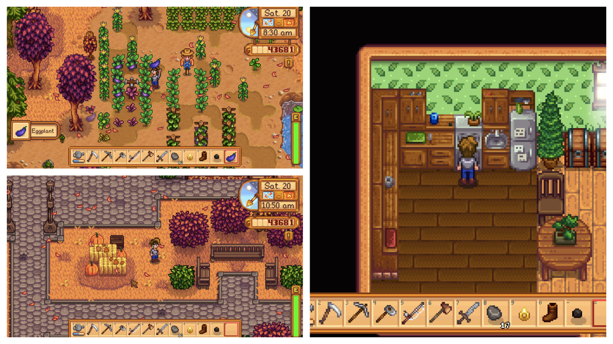
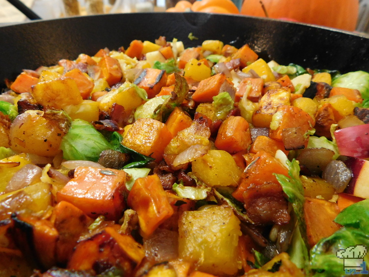

For my first official Stardew Valley recipe I knew I wanted to make something really special. Although the recipe I finally put together is relatively simple, the process was anything but. The number of recipe fails I experienced during the development of this one has GOT to be a new record for me! That said, I didn't quit until I had something really delicious and I'm so proud to share the recipe with you all now :].
Farming might not seem like a fun premise for a game at first, but I dare you not to get sucked in once you start playing.
So what's the big deal with Stardew Valley and why did I sacrifice so many pumpkins to this recipe? I think the game can best be explained as a love letter to the 'farm simulation' genre of video games and more specifically to the Harvest Moon series. Stardew Valley sees the player take on the task of rehabilitating a derelict farm. You will generally go about this by doing things like clearing farmland, tilling soil, planting vegetable seeds, and caring for the plants until they can be harvested and sold for money. The player can then take this money to reinvest in the farm by buying new tools and seeds among other things.
There's wayyy more to do in this game than just farming however! You can fish, you can mine, participate in town festivals, raise animals, fight a capitalist empire, and if you play your cards right, you can even marry one of the eligible townspeople and start a family! I love these types of games and I am very much looking forward to starting a new farm on my Nintendo Switch.
It's so bountiful!
As you can imagine with a game about growing crops, there's a good deal of cooking found in it, 72 recipes in fact! (And that's not even mentioning things like wine, jam, and cheese that you can process.) With the onset of the cooler weather I thought it would be appropriate to try making a dish that highlighted some fall flavors and I don't think I could've asked for anything more suitable than today's recipe: Autumn's Bounty.